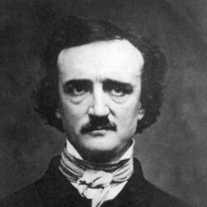

Edgar Allan Poe
Edgar Allan Poe was an American poet who lived during the 1800's.
He is best known for his contributions towards the creation of the
genre known as science fiction. He was such an astounding writer that
he was able to earn a living from writing alone. One of his more famous
poems was "The Raven", a dark and intriguing poem that many have tried
to determine some meaning from. As widespread and impactful as "The Raven"
was, Edgar Allan Poe only recieved $9 for its publication.

The Raven